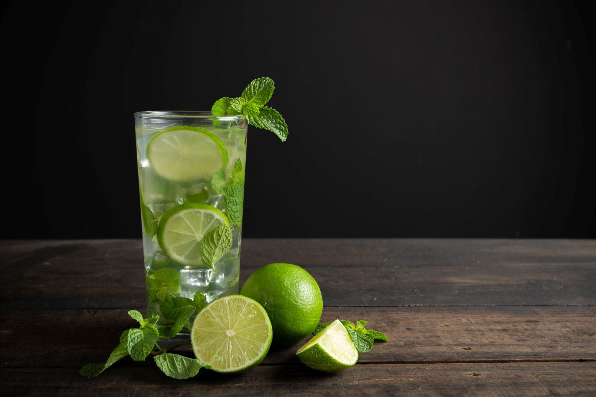
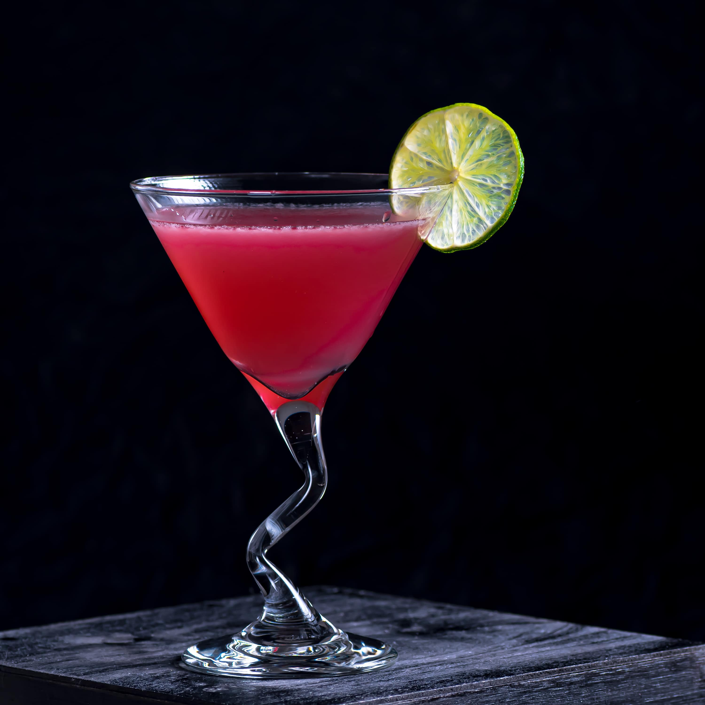
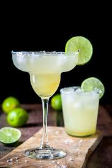
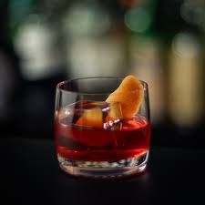
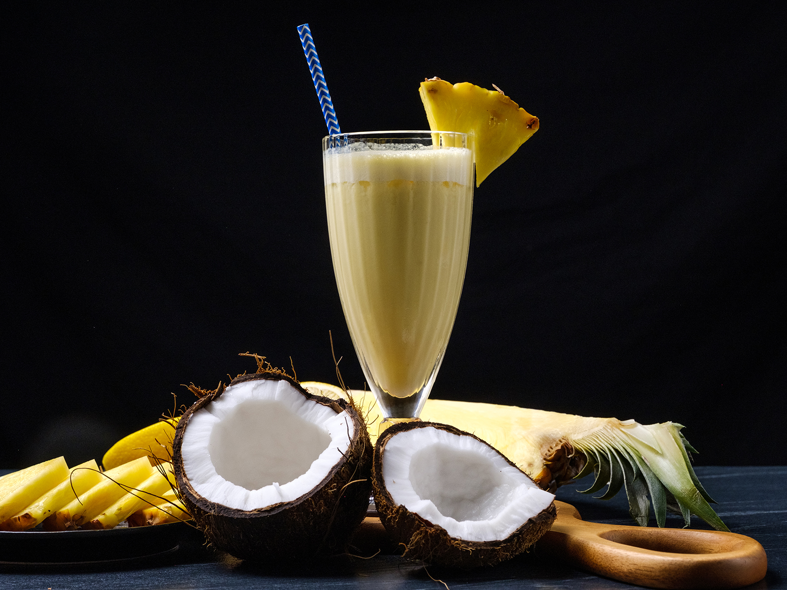
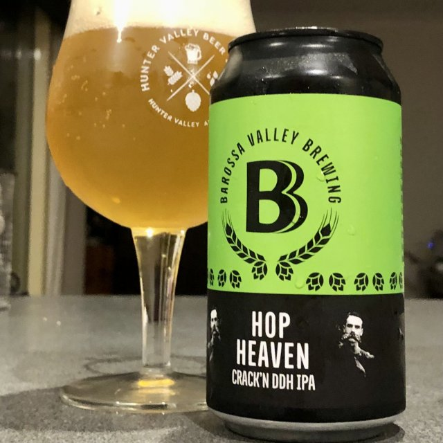
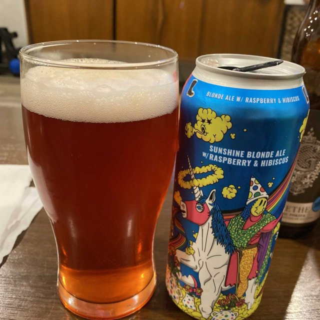
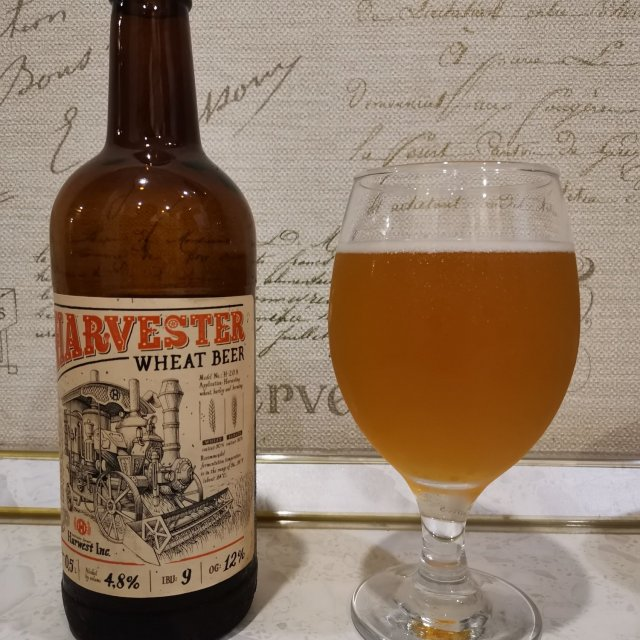
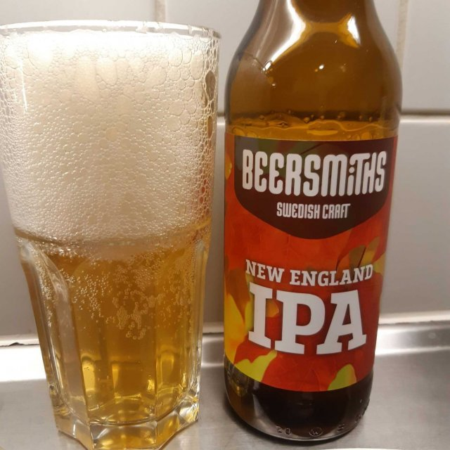

Meniu
La Barul Nostru, ne mândrim cu o varietate bogată de cocktail-uri pregătite cu pasiune și îndemânare. Fie că preferați cocktail-uri clasice sau căutați ceva inedit, avem ceva pentru fiecare gust.
Cocktail-uri clasice
-
Mojito
Ingrediente: rom, frunze de mentă, zahăr, suc de lămâie proaspăt stoarse, apă minerală, gheață.
Descriere: Un cocktail clasic și răcoritor, cu arome de mentă și lime.
 -
Cosmopolitan
Ingrediente: votcă, Cointreau, suc de afine, suc de lime proaspăt stoarse.
Descriere: Un cocktail elegant și acidulat, perfect pentru o seară specială.
 -
Margarita
Ingrediente: tequila, Cointreau, suc de lime proaspăt stoarse, sare (pentru marginea paharului).
Descriere: Un cocktail clasic mexican, cu o combinație răcoritoare de arome dulci și acide.
 -
Negroni
Ingrediente: gin, vermut roșu, Campari.
Descriere: Un cocktail italian puternic și ușor amar, cu un echilibru perfect între aromele băuturilor.
 -
Pina Colada
Ingrediente: rom, suc de ananas, lapte de cocos, gheață.
Un cocktail tropical și cremos, cu arome de ananas și cocos.
 -
Old Fashioned
Ingrediente: whisky bourbon sau whisky de secară, zahăr, bitter și o picătură de citrice.
Descriere:Un cocktail care datează din secolul al XIX-lea și este adesea considerat cocktailul original

Vinuri
-
Chateau Margaux 2015, Bordeaux, Franta
Descriere: Este un vin roșu rafinat cu arome de fructe negre, ciocolată neagră, trufe și un indiciu de mirodenii.Recomandat alături de preparate din carne roșie sau vânat.
-
Penfolds Grange 2010, Australia
Descriere:Descriere: Un vin roșu puternic și complex cu arome de fructe negre, ciocolată, vanilie și note de stejar. Este un vin cu o structură impresionantă și o lungime mare. Ideal cu fripturi de vită sau brânzeturi maturate.

-
Domaine de la Romanée-Conti Montrachet 2012, Burgundy, Franța
Descriere: Acest vin alb este foarte apreciat pentru complexitatea sa incredibilă. Aromele de piersică, măr, citrice și note minerale creează o experiență de gustare captivantă. Excelent cu fructe de mare sau pui.
-
Ridge Vineyards Monte Bello 2010, California, SUA
Descriere:Descriere: Un vin roșu elegant și rafinat cu arome de cireșe negre, coacăze și note de vanilie și mirodenii. Este foarte bine echilibrat cu o finisare lungă. Îl poți servi cu fripturi sau brânzeturi maturate.
-
Joh. Jos.Prüm Wehlener Sonnenuhr Riesling Auslese 2009, Mosel, Germania
Descriere:Este un vin alb dulce cu arome de piersică, măr verde și note de miere. Are o aciditate proaspătă care echilibrează dulceața și aduce un final persistent. Se potrivește de minune cu deserturi sau brânzeturi albastre.
-
Vega Sicilia Unico 2008, Ribera del Duero, Spain
Descriere:Acest vin este un vin roșu bogat și complex, plin de note de fructe negre, tutun, piele și un strop de condimente. Are o structură de tanin solidă și un final lung. Este o alegere excelentă alături de miel, vită sau vânat.
Beri speciale
-
IPA Hop Heaven
Ingrediente: apă, malț de orz, hamei aromatic, drojdie, lupulină.
Descriere: O bere artizanală cu arome bogate de hamei și un gust intens și amărui.
 -
Pilsner Pure Bliss
Ingrediente: apă, malț de orz, hamei nobil, drojdie.
Descriere: O bere clasică și ușoară, cu note subtile de hamei și un gust răcoritor.

-
Stout Midnight Madness
Ingrediente: apă, malț prăjit, hamei, drojdie, ciocolată, cafea.
Descriere: O bere neagră și bogată, cu arome de ciocolată și cafea și o textură catifelată.

-
Blond Ale Sunshine
Ingrediente: apă, malț de orz, hamei, drojdie.
Descriere: O bere blondă, ușoară și răcoritoare, perfectă pentru zilele însorite.
 -
Wheat Beer Harvest
Ingrediente: apă, malț de grâu, hamei, drojdie, coajă de portocală, coriandru.
Descriere: O bere de grâu cu arome fructate și condimentate, potrivită pentru sezonul de recoltă.
 -
Amber Ale Autumn Blaze
Ingrediente: apă, malț de orz, hamei, drojdie, caramel, condimente de toamnă.
Descriere: O bere cu nuanțe de culoare ambră și arome calde de caramel și condimente de toamnă.
